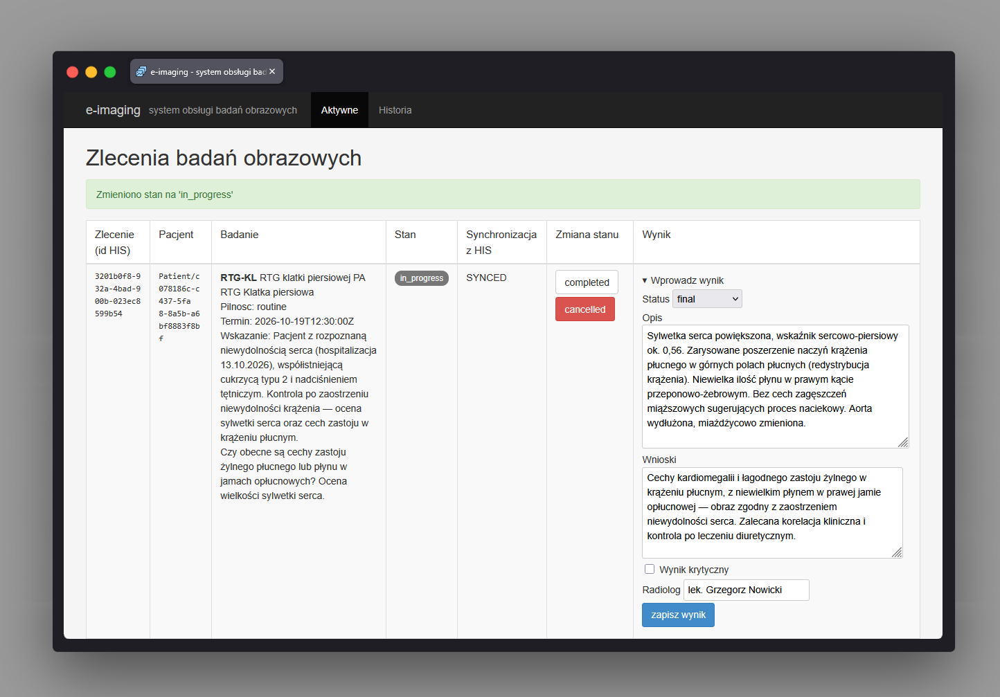

System zewnętrzny: e-imaging ImagingUiController
Ścieżka
Ten ekran nie jest częścią frontendu Angular HIS.
Należy do osobnej, niezależnej aplikacji
e-imaging (Spring Boot + Thymeleaf), symulującej
zewnętrzny system pracowni radiologicznej obsługującej badania
obrazowe. Działa jako odrębny proces/kontener, na własnym porcie,
i nie jest osiągalny z poziomu nawigacji HIS.
Dostęp do niego jest wyłącznie pośredni: gdy lekarz w HIS zleci
badanie obrazowe, HIS wysyła zlecenie do e-imaging jako zasób FHIR
ServiceRequest przez kanał mTLS (wzajemne
uwierzytelnienie certyfikatami, port 10423, endpoint
/fhir/**). Interfejs użytkownika opisany na tej
stronie (Thymeleaf, bez uwierzytelniania) służy personelowi
pracowni radiologicznej (technik/radiolog) do obsługi zlecenia
niezależnie od HIS - jest wystawiony na osobnym porcie HTTP
10433 (zakres portów UI systemów zewnętrznych:
10431-10433), bez certyfikatu klienta. Po
wprowadzeniu wyniku e-imaging wysyła go z powrotem do HIS jako
zasób FHIR DiagnosticReport, również przez mTLS.
Jeśli integracja jest wyłączona (parametr
eimaging.his.enabled / zmienna środowiskowa
E_IMAGING_HIS_ENABLED, domyślnie wyłączona), zmiana
zostaje zapisana tylko lokalnie w e-imaging (stan synchronizacji
DISABLED).
Przeznaczenie
Ekran ImagingUiController (/ui/orders)
prezentuje listę zleceń badań obrazowych odebranych z HIS i
pozwala personelowi pracowni radiologicznej: przeprowadzić
zlecenie przez kolejne stany (zaplanowane → w trakcie →
zakończone, lub anulować), oraz wprowadzić wynik badania (opis,
wnioski, flaga krytyczności, status wstępny/ostateczny), który
zostaje przekazany do HIS.
Widok ma dwie zakładki:
Aktywne (?view=active, domyślna) -
zlecenia w stanach nieterminalnych, oraz
Historia (?view=history) - zlecenia
zakończone (completed) lub anulowane
(cancelled). Każde zlecenie pokazuje też stan
synchronizacji z HIS (SyncState:
SYNCED - HIS potwierdził zmianę,
PENDING - HIS nie potwierdził (brak odpowiedzi/błąd),
DISABLED - integracja z HIS jest wyłączona i zmiana
jest tylko lokalna) - dla stanu PENDING UI udostępnia
przycisk ponowienia wysyłki. Wprowadzone wcześniej wyniki badania
(status, stan synchronizacji, znacznik "KRYTYCZNY", opis, wnioski,
radiolog) są wyświetlane w kolumnie "Wynik" nad formularzem nowego
wyniku.
Dane wejściowe
-
Zlecenia badań obrazowych odebrane z HIS przez FHIR
ServiceRequest(mTLS) - zawierają m.in. identyfikator zlecenia w HIS, referencję pacjenta, kod i nazwę badania, modalność, region ciała, stronność, flagę kontrastu, pilność, termin (slot), wskazanie kliniczne i notatki; lista jest pusta, dopóki HIS nie przekaże żadnego zlecenia. -
Kliknięcie przycisku zmiany stanu zlecenia (formularz POST
/ui/orders/{id}/statusz docelowym stanem) - dostępne przyciski zależą od bieżącego stanu zlecenia (ImagingOrderStatus.canMoveTo). -
Formularz "Wprowadz wynik" (widoczny tylko dla zleceń w stanie
scheduledlubin_progress, dopóki zlecenie nie ma już wyniku ostatecznego) - status wyniku (preliminary/final, domyślnie zaznaczonyfinal), opis (findings, wymagany), wnioski (conclusion, wymagane), checkbox "Wynik krytyczny", radiolog (opcjonalny, domyślnie "e-imaging") - POST/ui/orders/{id}/result. -
Przycisk "ponow wysylke do HIS" / "ponow wysylke wyniku" dla
zlecenia lub wyniku o stanie synchronizacji
PENDING- POST/ui/orders/{id}/synclub/ui/orders/{id}/results/{resultId}/sync.
Akcje
-
Wyświetla listę zleceń przefiltrowaną wg zakładki
(aktywne/historia): aktywne to zlecenia, których stan nie jest
terminalny (
ImagingOrderStatus.isTerminal()zwracafalse), historia - zleceniacompletedlubcancelled. -
Zmienia stan zlecenia
(
ImagingOrderService.changeFromUi) wg maszyny stanów:ordered → scheduled / in_progress / cancelled,scheduled → in_progress / completed / cancelled,in_progress → completed / cancelled(dopuszczalne pominięcie etapuin_progress: zescheduledwprost docompleted);completedicancelledsą stanami końcowymi bez dalszych przejść. -
Zapisuje wynik badania
(
ImagingOrderService.recordResult) tylko dla zleceń w staniescheduledlubin_progress(acceptsResults()) i tylko gdy zlecenie nie ma jeszcze wyniku ostatecznego; opis i wnioski są wymagane. Wynik otrzymuje statuspreliminary(wstępny) lubfinal(ostateczny). -
Po każdej zmianie stanu lub zapisaniu wyniku najpierw próbuje
przekazać dane do HIS jako FHIR (
ServiceRequestprzy zmianie stanu,DiagnosticReportprzy wyniku): jeśli HIS jawnie odrzuci zmianę, operacja kończy się błędem i nic nie jest zapisywane lokalnie; jeśli HIS jest niedostępny, zmiana zostaje zapisana lokalnie ze stanem synchronizacjiPENDING(do ponowienia z UI); jeśli integracja jest wyłączona, zmiana zostaje zapisana lokalnie ze stanemDISABLED. -
Zapisanie wyniku
final, który zostanie zsynchronizowany z HIS (albo gdy integracja jest wyłączona), automatycznie przenosi zlecenie do stanucompleted- odzwierciedla to analogiczne automatyczne zakończenie zlecenia po stronie HIS. -
Udostępnia ręczne ponowienie synchronizacji zlecenia lub
pojedynczego wyniku z HIS (
orders.resync/orders.resyncResult). -
Po każdej akcji przekierowuje z powrotem na listę zleceń
(
redirect:/ui/orders) z komunikatem sukcesu lub błędu (flash attributes).
Zrzut ekranu
